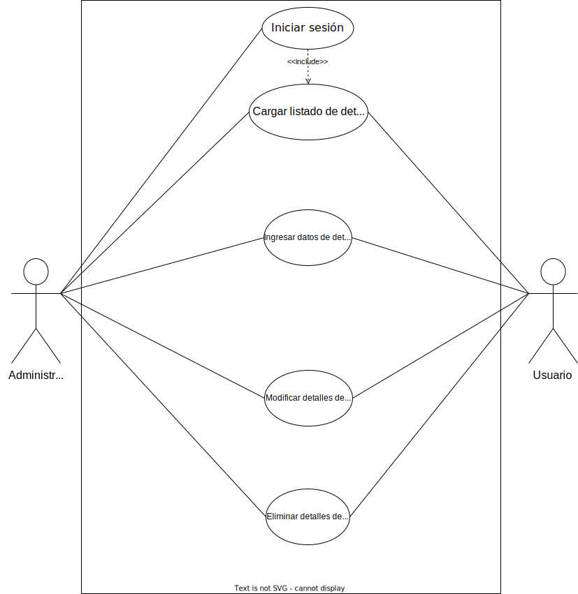
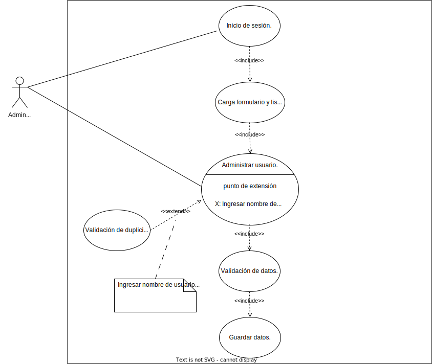

Los diagramas de casos de uso son herramientas valiosas para visualizar los diferentes roles (actores) que interactúan con un sistema y cómo lo hacen. Son útiles para comprender los requisitos del sistema, diseñar su funcionalidad y comunicar el diseño a las partes interesadas.
Paso 1: Identificar los actores
El primer paso es identificar todos los actores que interactuarán con el sistema. Los actores pueden ser personas, otros sistemas o dispositivos externos.
Paso 2: Definir los casos de uso
Un caso de uso representa un flujo de interacción específico entre un actor y el sistema. Identifique cada caso de uso principal y describa su objetivo.
Paso 3: Dibujar el diagrama
Utilice una herramienta de diagramación o simplemente dibuje a mano para crear el diagrama de casos de uso. Incluya los siguientes elementos:
- Sistema: Represente el sistema como un rectángulo.
- Actores: Represente cada actor como una figura similar a un humano.
- Casos de uso: Conecte cada actor a su caso de uso correspondiente mediante una línea. Etiquete cada línea con el nombre del caso de uso.
- Relaciones: Si hay relaciones entre casos de uso, como inclusión o extensión, indíquelas con flechas y símbolos apropiados.
Paso 4: Agregar detalles
Para cada caso de uso, puede agregar más detalles, como:
- Descripción: Una breve descripción del caso de uso.
- Precondiciones: Lo que debe ser cierto antes de que se inicie el caso de uso.
- Pasos: Los pasos que se siguen para ejecutar el caso de uso.
- Casos de post-uso: Lo que sucede después de que finaliza el caso de uso.
Paso 5: Revisar y refinar
Revise el diagrama de casos de uso para asegurarse de que sea preciso, completo y fácil de entender. Busque comentarios de las partes interesadas y realice los cambios necesarios.
Ejemplos de diagramas de casos de usos
Ejemplo Diagrama de casos de uso del actor "administrador" para unidades de medidas

Ejemplo Diagrama de casos de uso del actor "administrador" y "usuario" para detalle de la compra

Ejemplo Diagrama de casos de uso del actor "administrador" en control de usuarios
